2024
launching late 2025
Obertshausen (DE)
harolds-bags.com
2025
in development
Obertshausen (DE)
harolds-bags.com
2022
Tokyo (JP)
h220430.jp /
thedesignlabo.co.jp


2019
HfG Offenbach (DE)
together with L. Handon


2022
HfG Offenbach (DE)
together with D. Bösterling and P. Witkowski


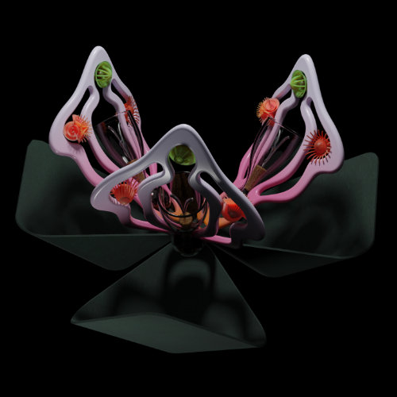
Tableware for a three course dish in space, that minimises transport volume without compromising the experience.
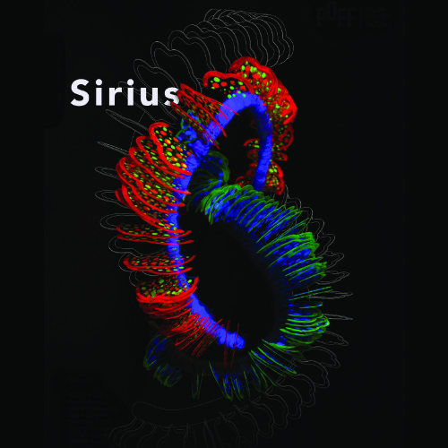
A speculative design about a future society living in symbiosis with nature and bioluminescent fungi.
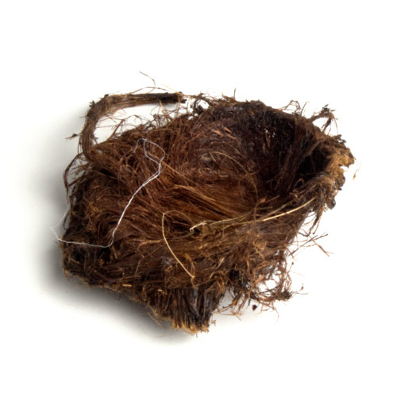
Experimenting with lignin-sulfonates, a byproduct of paper making, as a natural composite.
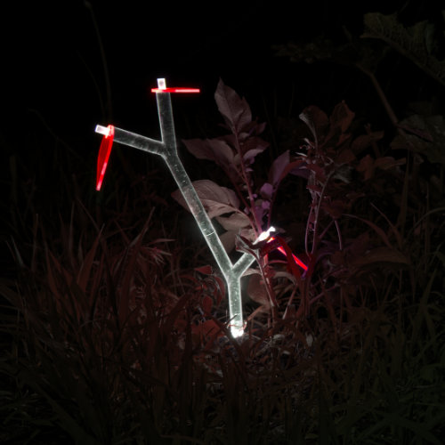
A grow-light for plants, that uses light guiding materials and mimicry, to integrate itself into the surroundings.

Creating a new unboxing experience for Casio G-shocks by rotating them into hard plaster.
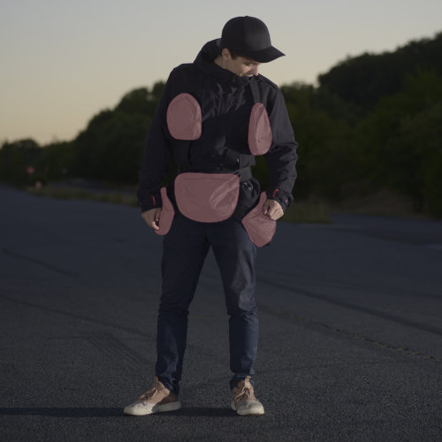
An ergonomic bag systems that mimics fat deposits in the human body, arguably the most ergonomic place to put weight.
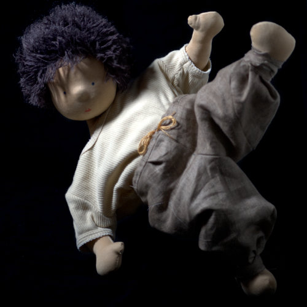
Developing a zero waste pattern for sewing pants to minimise waste during production.
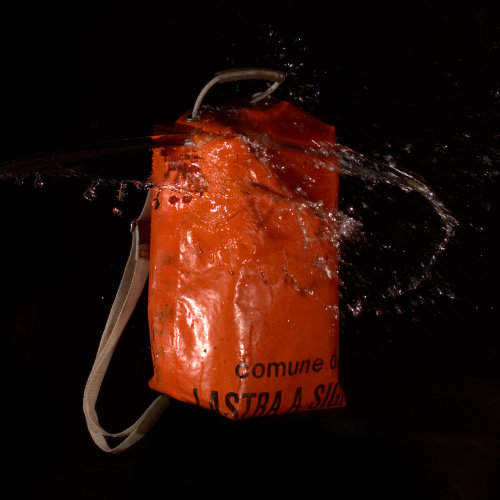
Sewing a waterproof backpack, out of a broken sandbag from the Italian railway company.
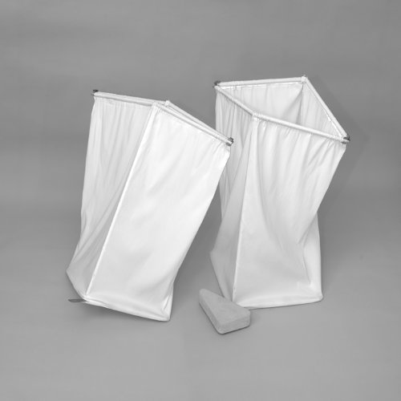
A cubic bin that deforms three dimensionally to open and close.
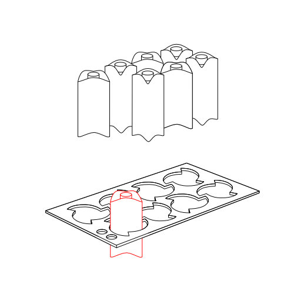
A minimal way to package bottles by twisting them into a form, while retaining stackability.
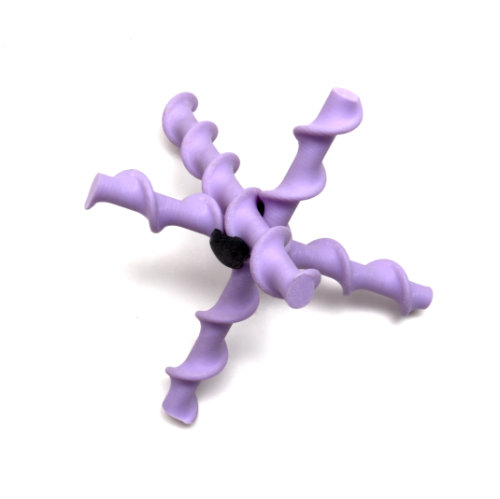
Experiments with adjustable connections and how minimal they can be.
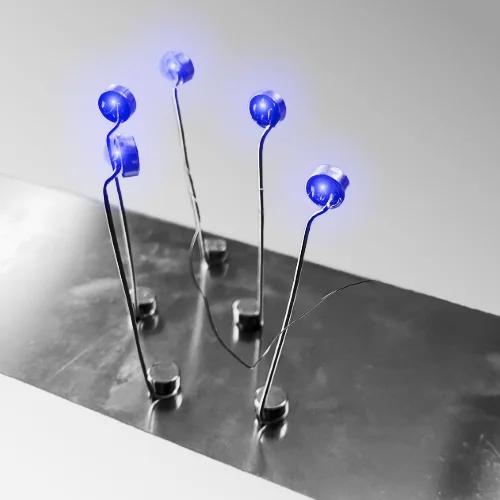
Transforming thrown out vapes into a kinetic sculpture, that reacts to wind
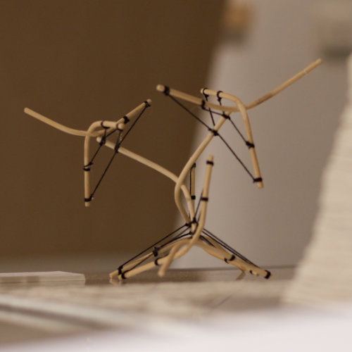
A bouncy connection inspired by muscle fibre connections, translated into 3D.
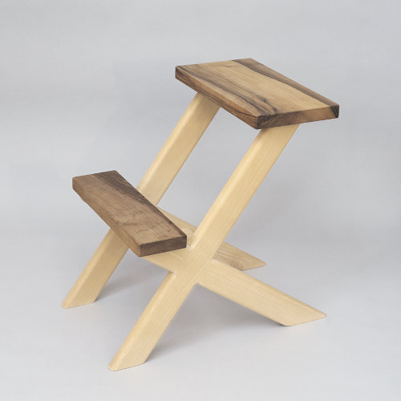
A minimal stool that relies on traditional wood connections to create steps.
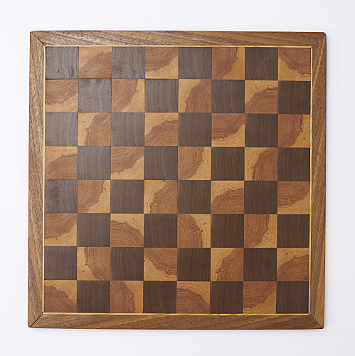
A chessboard made from scratch to learn about the construction techniques. (And also to have a chessboard)
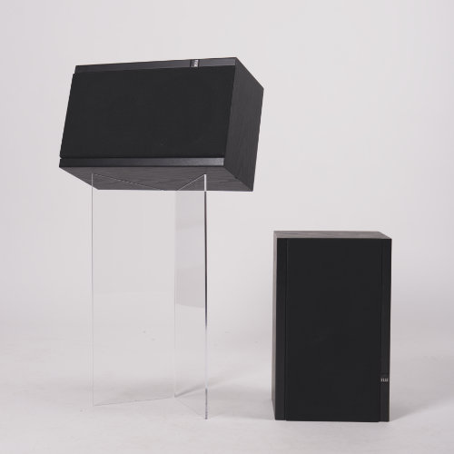
An almost invisible speaker stand made from bend acrylic glass.
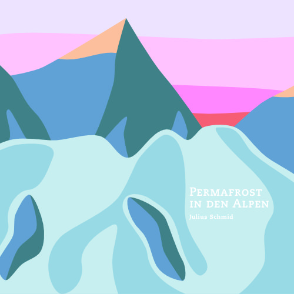
A title page and layout for a friend’s master thesis.
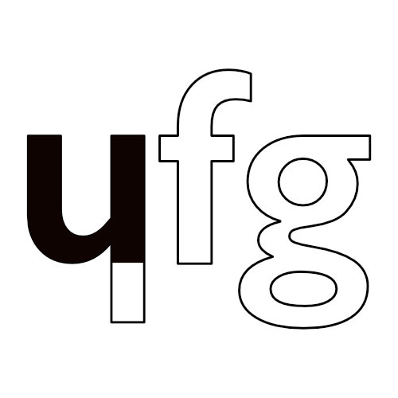
Creating a logo and corporate identity for “hfg underground”, a workspace for students I helped set up.
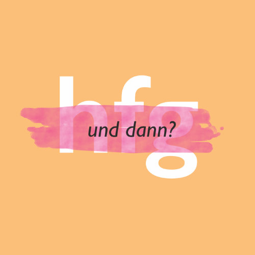
Creating and organising a talk series about design-work-realities, including a CI.
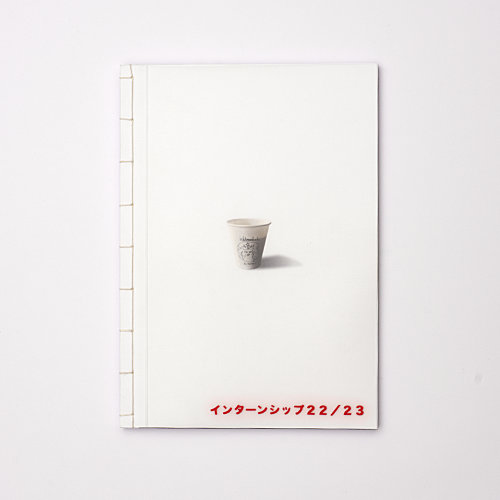
Printing and binding book about my time in Japan - mainly for my grandparents, who didn’t quite get the digital newsletter
2024 - today
private projects
studio-finder
2014 - today
private projects
2022 - today
Obertshausen, Germany
harolds-bags.com
2022 - today
Obertshausen, Germany
harolds-bags.com
youtube/haroldsbags


2006 - today
Japan, China, Vietnam, Thailand, EU, South Africa, Brasil, USA